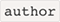

What Is an HTML Boilerplate?
Every website is different, but there are many things that are essentially the same
from one web site
to the next. Rather than write the same code over and over, it’s a
good idea to create your own
“boilerplate”. A boilerplate is a template that you
break out each time you start a
project, saving
you from having to start from
scratch.
Wikipedia describes boilerplates as:
sections of code that are repeated in multiple places with little
to no variation.
As you learn HTML5 and add new techniques to your toolbox, you’re likely going to
want to build
yourself an HTML boilerplate to start off all future projects. This is
definitely worth doing, and
there are many starting points online to help you build
your own HTML5 template.
A Really Simple Example of a Starter HTML 5 Boilerplate
The full template that we offer at the end of this article has a lot in it. But you don’t
have to get
that fancy — especially if you’re just getting started. Here’s a really
simple “getting started” HTML5
template that may be all you need:
If you paste the code above into an file, you’ll have a
web page!
This basic,
HTML5 template includes some of the elements listed in the next section, as well
as a
simple heading element that will be displayed in your web browser.
Let’s look at this anatomy in more
detail.
The Anatomy of an HTML5 Template
An HTML template typically includes the following parts:
- The document type declaration (or doctype)
- The
 Element
Element - The character encoding
- The viewport meta element
- ,, and 
- Open Graph meta elements for social cards
- Favicons and touch icons
- Links to CSS styles
- Links to JavaScript files
Other than the document type declaration and element, the
elements
listed above will mostly be found inside the section
of the HTML
template.
The HTML5 Doctype
Your HTML5 template needs to start with a document type declaration, or
doctype. A
doctype is simply a
way to tell the browser — or any other parser —
what type of document it’s looking at. In the case of
HTML files, it means the
specific version and flavor of HTML. The doctype should always be the first
item
at the top of any HTML file. Many years ago, the doctype declaration was an ugly
and hard-to-remember
mess, often specified as “XHTML Strict” or “HTML
Transitional”.
With the advent of HTML5, those indecipherable eyesores are gone and now all
you need is this:
Simple, and to the point. The doctype can be written in uppercase, lowercase, or
mixed case. You’ll
notice that the “5” is conspicuously missing from the
declaration. Although the current iteration of
web
markup is known as “HTML5”, it
really is just an evolution of previous HTML standards — and future
specifications
will simply be a development of what we have today. There’s never going to be
an
“HTML6”,
so it’s common to refer to the current state of web markup as simply
“HTML”.
Because browsers are required to support older content on the Web, there’s no
reliance on the doctype
to
tell browsers which features should be supported in a
given document. In other words, the doctype
alone
isn’t going to make your pages
compliant with modern HTML features. It’s really up to the browser to
determine
feature support on a case-by-case basis, regardless of the doctype used. In fact,
you can
use
one of the older doctypes with new HTML5 elements on a page and
the page will render the same as it
would
if you used the new doctype.
The Element
The element is the top-level element in an HTML file — meaning
that it
contains everything in the document other than the doctype. The
element is divided into two parts — the and sections.
Everything else in the web page file will be placed
either in the element or
inside the element.
The code below shows the element, which follows the
doctype
declaration and includes the and elements:
The Complete HTML5 Boilerplate
Here’s our final HTML5 Template — a basic boilerplate that you can use for any
project:
You can drop this simple, ready-to-use HTML5 template code into any project
today! Building on this,
you can add whatever content you want between the
and tags.